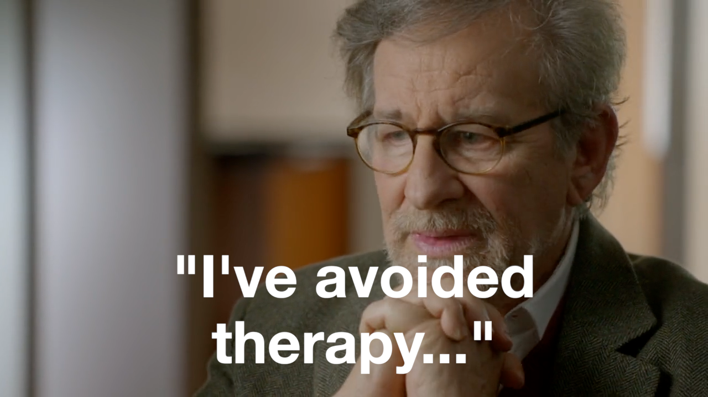
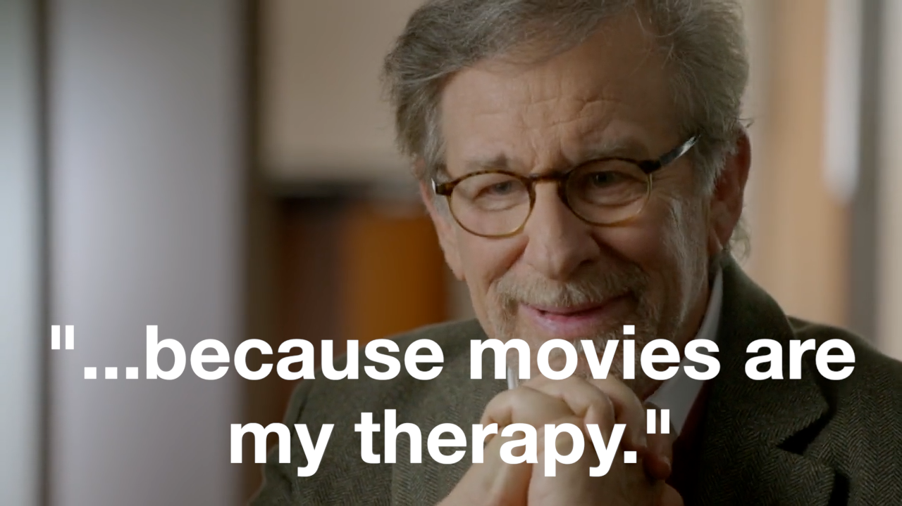
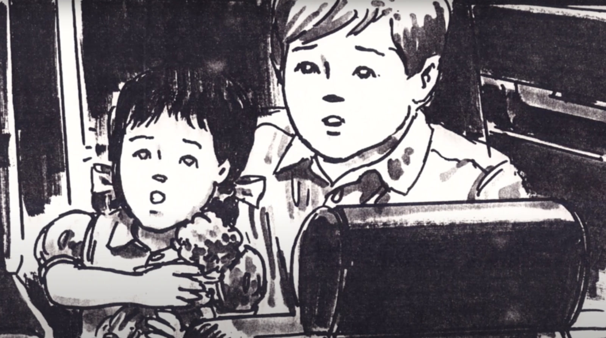

Suppose that Steven Spielberg’s mid-career magnum opus, Jurassic Park (1993), reflects the filmmaker's own guilt over his involvement in the illegal hiring of two children killed on a “Steven Spielberg Production” in 1982. Even if true, why would this discovery matter, all these years later, in today’s far more cynical times?


In my seminal media essay, IJPAUC? (2025), I argue that Jurassic Park (1993) is an unconscious confession. By that I mean that: when Spielberg’s emphasis on the pertinence of psychoanalyis to his work is taken seriously, the evidence is overwhelming that the franchise-founding ‘90s blockbuster bears heavy imprints of the infamous 1982 Warner Bros’ Twilight Zone: The Movie helicopter accident that took the lives of two immigrant children knowingly hired by the production as unpermitted “extras,” Myca Le (7), and Renee Chen (6).


I am not the first to make the connection between Jurassic Park (1993) and the Twilight Zone accident; I am, however, the first to ask whether it constitutes a “confession.” In other words, I consider the cultural status of Jurassic Park in light of the unanswered—and indeed, unasked—question of whether Spielberg in any way (tacitly or explicitly) sanctioned the illegal hiring. This question is motivated by the facts that Spielberg's Amblin Entertainment Co-Founder, Frank Marshall, is deeply implicated in the illegal hiring, and avoided two subpoenas (one international) for his testimony in 5 years abroad. As well, virtually all of the segment's production materials went missing. At the time, Spielberg was notorious for his prolific "thumbnail sketches," and for being a back-seat director (e.g. on Tobe Hooper's Poltergeist, 1982).
In the three books written about the case (Special Effects, 1987; Outrageous Conduct, 1987; Fly by Night, 2022), each by reporters who sat in on the trial, the question of Spielberg’s involvement in the planning of the fatal sequence remains one of plausible and serious interest. In short, the lion’s share of the blame for the tragedy fell upon co-producer/writer/director John Landis: he along with two production subordinates were charged with two counts of manslaughter, one for each child. But they maintained that co-producer Spielberg’s camp—the more experienced group of filmmakers, who had been tasked by the studio with keeping an eye on Landis)—were well-aware of the illegal hiring and had given it their blessing. On painstaking analysis, the facts of the matter largely support the Landis group's claim. As for Amblin: they've let the films do the talking. Most recently, Frank Marshall produced Jurassic World: Rebirth (2025).
The purpose of this supplementary essay is to explain the significance, or upshot, of my conclusions as to Spielberg’s involvement based on the available evidence. I’ll begin by recapping the accident and the argument for Spielberg’s involvement in its particulars, before turning to what I see as the moral and poetic fallout of that involvement, given Spielberg’s titanic status as an American poet.
In the end, do our narratives carry any real moral currency? And if so, upon what is that currency based?
The Twilight Zone Accident (July 23rd, 1982)
At 2:20am, the two children are carried across a river—Le under one arm, Chen under the other—as the anti-hero, played by 53-year-old veteran Hollywood actor Vic Morrow (also killed), tries to deliver them to the safety of the opposite shore. But the fourth and fifth explosions fired blow through the roof of a fishing hut and destroy the tail rotor of the helicopter, causing it to spiral downwards onto the spot where Morrow had just moments earlier stumbled to his knees. Renee had for a few brief seconds slipped from his grasp; plunged face-first into the murky waters below.
Thanks to the diligent work of singular investigators in the NTSB and the Los Angeles D.A.’s office, charges of Involuntary Manslaughter were brought against five members of the film production, headlined by John Landis, the movie’s co-producer, and the writer/director of the segment involving the children.
Landis, along with two subordinates (his Associate Producer and Production Manager), admitted to soliciting the children without permits (a misdemeanour with a maximum $5,500 fine) so as to allow the production to work the children at night for the sake of artistic effect, i.e., for the sake of realism. They denied that they saw any special danger in this despite the practical effects and pyrotechnics called for by the shot, because safety would be in the hands of trained professionals; the state challenged this assertion. They received two counts each, one for Myca, and one for Renee. Landis, who was widely witnessed to have called the helicopter into position, along with two technicians (the SFX Coordinator and the helicopter pilot) who received three counts each for on-set negligence in the performance of their professional duties.
The charge of Involuntary Manslaughter is commonly misunderstood. The state accepts that the defendant(s) did not intend the accident or the deaths. Since every defendant would maintain that the accident, being accidental, was beyond their control, the state must prove that it would have been foreseeable to a reasonable person in their same situation. In any case, however, what is being faulted is not the deaths per se, but the defendant's character, as reflected by the state they had allowed themselves to be in at the time of their reckless actions pertaining to the accident.
Landis, shadowed by his attorney during a pretrial hearing (1984). After a long and contentious string of legal proceedings including a full criminal trial (1986-1987), the five defendants were finally acquitted in 1987. A $200-million dollar lawsuit filed by the families in the days after the accident was settled for approx. $2-million dollars per family during closing arguments.
What does any of this have to do with Spielberg, who was only 36-years-old at the time, and preoccupied with the release and reception of E.T.: The Extra-Terrestrial (July 1982)?
Evidence of Amblin's Involvement (June/July 1982)
Twilight Zone: The Movie was an anthology film co-produced by Landis and Spielberg. It featured four different segments by four different directors—some original, some remakes—of which Landis’s (an original) was the first to go to production.
Spielberg was among 14 defendants named in the civil case. But the suit had been filed in the early days after the accident and was forced to cast a wide swath. Spielberg was named, but so were Joe Dante and George Miller, the directors of the other two segments, who plainly had nothing to do with the hiring or accident. In the wake of the accident, Spielberg distanced himself from Landis (previously a friend or friendly rival), and by most popular recountings, acquitted himself admirably of whatever trivial association existed between himself and Landis’s alleged criminal negligence.
The core question is this: did Spielberg in any way know in advance that John Landis intended to hire two children without permits in order to be able to film on location, at night; and, in proximity to large industrial machines and pyrotechnics?
***
Marshall and Spielberg only worked together for the first time on Raiders of the Lost Ark (1981). At the time, Spielberg was still reeling from his first big box office flop, the SNL-inspired wartime farce, 1941 (1979).
Executive Producer and Indiana-Jones-IP-holder George Lucas enlisted Spielberg to direct the project, which they would use as an opportunity to get his production practices in order; Spielberg had never previously brought in a film on time or budget (of Jaws, 1975, Close Encounters, 1977, and 1941. Spielberg remembered Marshall from a brief meeting on a film set years ago, where Marshall had impressed Spielberg with his work ethic. The third member of the team was Kathleen Kennedy, who’d been a Production Assistant on 1941, but impressed Spielberg with her quick thinking and story suggestions. Marshall was Raiders' Executive Producer; Kennedy was credited as “Associate to Mr. Spielberg.”
Together they successfully implemented a new production regiment: staying organized, and keeping to a strict schedule. Spielberg, already an avid storyboarder, became even more prolific, as a means of enabling more efficient production processes. Spielberg produced thousands of “thumbnail sketches,” which would then be condensed by illustrators into storyboard codices, a practice which intensified even futher with Temple of Doom (1984), for which Spielberg said he developed "about 4,000 individual frames", and continued (generally) through Jurassic Park and beyond.
By the summer of 1980, it was clear that Raiders was an operational success. Spielberg, Marshall, and Kennedy decided to reboot Spielberg’s personal loan-out corporation from the ‘70s—"Amblin Productions, Inc."—as a children’s and family-oriented film and TV brand, in the same general mystic suburbi aesthetic Spielberg established with E.T.. Marshall and Kennedy began dating around this time, and would go on to be married later in the decade.
(Spielberg was on-and-off with future first wife, Amy Irving, at the time, in a long-distance relationship with live-in girlfriend, Sony record executive, Kathleen Carey). The next two years saw the momentum build. Kennedy went on to produce E.T. (released July 3rd, 1982), while Marshall went on to produce Poltergeist (released July 10th, 1982). At the time, Amblin’ was still in a nascent state: the movies they produced between 1980-1984 had irregular production credits, and during this time their offices were still located on the Warner Bros. lot, before moving to their Hacienda-style bungalow on the Universal Studios lot in 1984. By July 10th, 1982, the reception of Poltergeist and E.T. meant three box office hits within the span a single year.
This was the social and production context in which Twilight Zone: The Movie emerged. Spielberg discovered the project stalled on Warner Bros’ production slate early in 1982. While the TV rights to the classic IP had been spoken for, Spielberg hadn’t realized the movie rights were independently available. He quickly thought of Landis, whom Spielberg had first met during the making of Jaws, but whom he only became friendly with after Landis’ Animal House (1977)—Landis’ breakthrough success, which became the then-highest-grossing comedy of all time.
At the time, Spielberg, Marshall, and Kennedy, had been recruiting filmmakers to help establish an Amblin’ fleet: young talents like Joe Dante (The Howling, 1981), and Lawrence Kasdan (Continental Divide, 1981); in addition to Robert Gale and Bob Zemeckis (I Want To Hold Your Hand, 1976; Used Cars, 1978), whom Spielberg had been fostering for years. The Twilight Zone movie was then being talked about as a recurring showcase. Spielberg and Landis would co-produce. It would be a “Steven Spielberg Presents” (a credit unclaimed in the finished film). Marshall would be the Executive Producer.
In the midst of the staggering reception to Spielberg’s long-awaited emotional and cinematic breakthrough, E.T., Spielberg was hard at work on his own Twilight Zone segment, which began as a wide-sweeping, all-the-kids-in-the-neighbourhood scary Halloween story, with state of the art prosthetics by Rick Baker (of Thriller, 1983) fame.
The deal memo between Warner Bros’ and the filmmakers—Landis’ group and Spielberg’s group—stipulated some measure of studio oversight: there were to be two gatekeepers of spending, Warner Bros’ themselves, and Disc Management Systems, Inc., a payroll company owned by Marshall, also located on the Warner Bros’ lot. Landis's reputation as a renegade preceded him. Tales of destruction and debauchery on The Blues Brothers (1980) are legendary; the film had been jokingly termed “1942” by the *film establishment* in reference to Spielberg’s earlier production mess. Marshall, as Executive Producer, was expected to monitor Landis’s group to make sure they got the job done on time and budget, just as he (Marshall) had on Raiders, and Poltergeist.
Landis, during all of this, was grieving the heroin overdose of his friend and muse, actor John Belushi (March 3rd, 1982).
Landis submitted his first draft on April 15, 1982. In the professed vein of Twilight Zone’s thinly-veiled social commentary, Landis’s script was—beneath the surface—a bitter indictment of America’s role in the Vietnam war. A bigot (played by Morrow) finds himself travelled back into three different eras (1941, 1954, and 1967), placed into the perspectives of those whom he so readily disparaged (blending a few classic Twilight Zone tropes) until finally being hauled off in the 1941 timeline, to a Nazi concentration camp.
Story-wise, however, for Landis’s immediate Warner Bros’ liaison, Executive, Lucy Fisher, who gave feedback indicating the protagonist to be too unlikeable and the story overall to be bitter and ineffective from an audience’s standpoint.
Landis produced a second draft on May 24, 1982. The second draft barely changed. Landis received more feedback from Fisher at her offices that the story was too cynical, but the matter was finally settled on Saturday, July 11th, in the wave of E.T.s rapturous premiere and reception, that Landis met again with Fisher and Head of Production, Terry Semel, and together or by himself, Landis out of that meeting devised a new ending, in which the anti-hero would rescue two children from an American assault helicopter in a bombed-out Vietnamese village as a way of redeeming himself in his own and the audience’s eyes.
A third draft followed days later, followed by a fourth and final draft on July 26th, 1982, featuring a tweaked ending, and the addition of a single prop: “A broken and naked Barbie doll.” Story-wise, presumably, this is meant to tokenize the emotional gesture taking place at that particular beat—when the orphan is offering the shellshocked veteran her only comfort in a profound act of pity, the gesture which motivates his moment of reversal and enacted redemption, by returning the children to the safety of the opposite shore. The prop is visibly being clutched by 6-year-old Renee Chen during the final shot.
Was this note relevant to the overall story? And who provided it?
According to interviews with Joe Dante (the director of the next segment to go to production), Twilight Zone: The Movie in its original design was as a far more continuous and meta-referential than it ended up becoming.
Spielberg was contemporaneously involved in a public relations mix-up with Poltergeist director Tobe Hooper. On June 3rd, he’d placed ads in three trade papers, by request of the Director’s Guild of America, apologizing to Hooper for the press’s mistaken impression that he (Spielberg) had directed Poltergeist, and not the other way around. Spielberg had acquired a reputation as a hovering, back-seat director; a seemliness echoed by Julia Phillips, the co-producer of Close Encounters of the Third Kind (1977), in her notorious Hollywood tell-all, You’ll Never Eat Lunch in This Town Again (1991).
As elated and busy as Spielberg was at the time with the opening of E.T., he was characteristically obsessing over the project at hand: Twilight Zone: The Movie. Although nominally this meant his own original segment, for which he was hard at work, in his role as co-producer, Spielberg had every right to read Landis’s drafts and give feedback. Warner Bros’ would likely want and expect Spielberg to give his feedback on Landis’s segment as part of the multi-picture deal they’d just negotiated with Amblin.
It’s possible that in the name of tact Spielberg may have done so through an intermediary, such as Lucy Fisher, as argued by journalist Steve Chain in Fly By Night (2022)?
One Warner Bros’ Executive caught up in the chain of the hiring, Ed Morey, even gave the following grand jury testimony in 1983: DA (GK): Who represented the John Landis production staff at those meetings? EM: The executive producer, Frank Marshall; the associate producer, George Folsey Jr.; the production manager, Dan Allingham; I think Bonne Radford was there. Landis wasn’t at those meets. Never met him. DA: Was it your understanding that Frank Marshall was simply lending his name to this production, but in essence the individuals who were running the show so to speak were John Landis and George Folsey? EM: Yes, I think Frank Marshall was really representing Steven Spielberg. In any case, the obvious problem presented by the new segment introduced in the third draft (June 13th, 1982) was: how was Landis’s group going to film with real children at night given well-known labour laws regulating their working hours? To say nothing of their proximity to the major practical effects spectacle Landis had been boasting about around the office for the big finale for which everyone assumed he intended to use dolls; except for Landis and his two subordinates, who knew better what Landis seemed to feel he needed for his desired cinematic effect: real children held under the real actors arms from six angles as a helicopter strafed and blasted at them from the sky above. (It would turn out to be just 25-feet above.) The production had already settled on a location at Indian Dunes film park, about an hour north of Hollywood, where they’d budgeted to build an entire Vietnamese village set for an additional $200,000 of production expenses. A young casting agent testified that she alerted Marshall over a month in advance (specifically, June 18th—the week following the 3rd draft) that Landis and his colleagues had been openly making arrangements to hire children “off the streets,” which she found alarming. Being only 24-years-old, she told a supervisor she trusted: Marshall, for whom she’d just worked on Poltergeist. He told her “he’d take care of it.” It was only a few weeks later, after production had started, and Twilight Zone Productions, Inc. (the shell company representing both Landis and Spielberg) officially received approval from Warner Bros’ for the newly conceived Village-helicopter sequence. * Landis testified that on July 9th, Marshall gave him and his co-defendants (at their offices on the Universal Studios lot) explicit permission to pursue the illegal hiring. * Marshall’s signature is on the cheque used to disburse cash to pay the families. * Marshall’s accountant (Bonne Radford), who was in the loop about the illegal hiring, supplied an envelope full of cash, from the Amblin’ offices, to a production assistant, the day of the accident. * Marshall was on-set both nights the children were there, including the first night when they were kept up until 5:00am, and during the first shot in which the children were used on the second night, in which they were placed into close proximity to live explosives, underneath a low-flying helicopter, dropped into water, etc. * Before and during the final shot, Marshall was standing beside the Location Manager (Richard Vane), the highest-ranking member of the production to admit to participating in an on-set conspiracy to conceal the children from Fire Safety Officers. In the aftermath of the accident, Marshall—as Executive Producer—played a key role in resolving the chaos and wrapping the set, before showing up to Landis’s office the next morning to round up several boxes worth of production documents. But between the years of 1982-1987, while scores of other production members and witnesses co-operated with investigators, Marshall evaded domestic and international subpoenas for his testimony. Marshall at least, has only spoken once on record, for the L.A. Times, in an interview intended to promote Arachnophobia (1990), when he denied any wrongdoing, and pinned his failure to cooperate with investigators on having nothing to say and being out of the country: which the D.A.’s office flatly contradicted in the same article: ”while Marshall himself was not indicted in the case, deputy district attorney Gilbert Garcetti told reporters after the trial that his office made “every effort possible to subpoena Frank Marshall but he was able to get out of our hands.” As for Spielberg, he was never reported to be on Landis’s set, except for once by a truck driver who later said he must have mistaken Marshall for Spielberg. Spielberg provided a signed affidavit saying he’d never been on Landis’s set. Beyond that, Spielberg provided two very similar, highly-curated statements to the same L.A. Times reporter just after the Oscars in 1983 and 1984. When asked about the accident by a reporter in 1985 during a CNN interview, Spielberg reportedly put up his hands and asked that the cameras be turned off. Spielberg’s long-pending deposition for the civil trial was reportedly two days after the lawsuit was settled (May 7th, 1987). Spielberg never distanced himself from Marshall, nor the two other Amblin contractors seriously implicated in the hiring and subsequent conspiracy to conceal the children from authorities (Vane and Radford), who all received promotions in the years to come. Most recently, Marshall was Executive Producer on Jurassic Park: Rebirth (2025). But would Frank Marshall facilitate or turn a blind eye to an illegal hiring for Landis, if not with approval from Spielberg? And why would Spielberg have any interest whatsoever in whether real children were used for Landis’s segment? Well, why did Landis for that matter? Artistic discretion. Spielberg at that time was in a state of self-described filmmaking-mania. Speaking sometime in 1982: It happened last year when I was in production on two movies at the same time, Poltergeist and E.T., and I was finishing up post production on Raiders of the Lost Ark, and I was planning a musical with Quincy Jones, and I was thinking about an adult love story called Always, and all of a sudden I realized I was a non-identity. I was existing only on celluloid and I was losing my own identification with Steven Spielberg, and I was forming sprocket holes down both sides my face, and frame lines across my body, and I was starting to move at about 8 frames a second, which is too fast to be moving in movie jargon. (20/20 Australia) In his capacity as co-producer, Spielberg was plausibly and characteristically occupied with the film as a whole (although this particular dynamic was unprecedented). The questions are simple: did Spielberg introduce the necessity of using children?; and more importantly, was he aware of Landis’s intention to use real children for any part of the action sequence? If the latter question seems like a stretch, it’s because it helps motivate Marshall’s bizarre tolerance of the illicit presence of children on Landis’s set particularly during the 9:30pm shot on July 22nd, 1982. The charge of Involuntary Manslaughter can be especially confusing to a layperson. In other crimes (such as burglary), the defendant typically denies being the one to have performed the act itself. In the case of Involuntary Manslaughter, by comparison, the state concedes that the defendant did not intend the fatal act, but that they still performed their duty of care to those who were killed to such a degree of negligence that it warrants legal address. In other words, that the defendant claims he had no intention whatsoever of causing harm is of little or no bearing on their culpability or innocence, contrite as they may be; the prosecutor must compare the defendant’s behaviours relating to the accident to that of an imagined “reasonable person” acting in the same scenario for all intents and purposes. It therefore targets the defendant’s character at the time of putting those within their care in harm’s way (asking whether that harm was reasonably foreseeable or not); and is remarkable for treating that callousness of character (and not the intention per se) as a serious violation of the social contract in itself. The California statute is sparse but the case law concerning what “without due caution and circumspection” means in this case traces back to a judgement in 1955: negligence which is “aggravated, culpable, gross, or reckless… such a departure from what would be the conduct of an ordinarily prudent person… as to be incompatible with a proper regard for human life.” But how exactly did they get added to the script? I mean: who all was apprised of that change, and what did they contribute to its execution? This point matters because Landis and two subordinates were charged with Involuntary Manslaughter for the illegal hiring itself—regardless of who was Directing or how he was Directing it. Actually, the point is even stronger than that. Landis’s representatives could at least credibly claim their clients perceptions of danger were warped. Spielberg, Marshall, and Kennedy—far more familiar with child labour laws, given their recent experience—would be less able to make this claim. Speaking in 1995, Jurassic Park screenwriter David Koepp said: The kids were kind of a challenge, because we didn’t want it to seem like they were there just to have kids in the movie. Steven, in particular, is vulnerable to criticism like that, because he likes to work with kids. He works with kids awfully well, so it’s not entirely fair, but the perception is there nonetheless. So our challenge was to find out why the kids were essential to the movies. (The Making of Jurassic Park) Every other segment in the film ended up involving children, suggesting a possible narrative or thematic through-line established at the production level. After all, Spielberg and Marshall were working door-to-door in the same Warner Bros’ “Amblin Productions” bungalow where the film as a whole was a going concern. Given that Marshall is embedded in the illegal hiring, and he faced no professional consequences for this association, is it possible that Spielberg knew about the illegal hiring? These and other questions were raised by Landis’ attorney in 1985: Simple interviews with Spielberg, Marshall, and Kennedy would reveal that these highly placed and acknowledged experts knew that a scene was being shot in their own movie in which actors were being used in a scene with a helicopter and special effects. These participants knew the elements of the scene and would have stopped the production had they ever thought that special effects could not be safely used with actors and helicopters. For Kesselman to have pursued the conspiracy to employ minors without a permit would have resulted in the destruction of his manslaughter case against the five targeted defendants. Frank Marshall was on the set on the night of the accident as well as on the previous night. Marshall saw the children present and saw them in the 9:30 shot in which they were held by Vic Morrow in a scene with a helicopter and special effects. Marshall was present the whole evening and observed the 11:30 sequence involving Morrow, the 2:00 rehearsal as well as the scene in which the accident occurred. Marshall was the producer of the "Twilight Zone" and participated at meetings in which the hiring of the children was discussed and agreed upon. Since the statute of limitations has now expired, he has no fifth amendment right and if asked will hopefully tell the truth. But what must be emphasized again is the fact that his participation in the hiring of the children without permits was viewed as a "technical" violation that in no way meant that anyone was in danger. Marshall and Kennedy could verify that Kennedy called the Department of Labor to determine whether permits could be obtained for minors after hours. It was only after her call received a negative response, that the decision was made to employ the children without permits. Again, Ms. Kennedy had no belief that there was any danger even though she was intimately acquainted with the nature of the shot and the use of the children. In fact, she was on the set the prior night when the scenes filmed on the fatal night were scheduled to be shot. With respect to Mr. Spielberg, Marshall and Kennedy will be able to state whether he knew that children were to be employed without permits. It could be reasonably inferred that given the close relationship between Spielberg, Marshall and Kennedy and Spielberg’s close supervision of his own movies, that it would be almost inconceivable that Marshall and Kennedy would not tell Spielberg that children were to be employed without permits on Spielberg’s own movie. (Harland Braun to L.A. D.A.’s Office, December 1985) Although they produced a fresh international subpoena for Marshall, Interpol only finally intercepted him and Kennedy in Spain March of 1987, after their testimony was of no use. Lest the reader consider the very suspicion of negligence on the part of Amblin to be prejudiced, consider the company’s documented history of actor endangerment 1975-1982: * On Jaws, in 1975, several actors were put at undue risk due to the carelessness of the production. I mean for example, Susan Backlinie, the stunt actor who played Jaws’ first victim sustained: “lacerations and bruises for years to come, don’t ask,” according to Julia Phillips. Richard Dreyfuss describes her as having been “waterboarded” by Spielberg during sound recording. A 12-year-old volunteer playing another key victim was held underwater by divers in order to get the desired shot; and a “little person” stunt actor was almost eaten alive on camera by a real Great White Shark because the production’s miniature oxygen tank turned out to be defective. * In a 1981 Dick Cavett interview, Spielberg demonstrates an in-depth understanding of stunts and stunt danger. He also describes pranking actor Karen Allen during the filming of Raiders of the Lost Ark by dropping a snake on her on film, in a production context in which literally 7,000 live snakes were used at the request of the director; including several lethal cobras. Why was this thought to be necessary? * In Vanity Fair’s Poltergeist, JoBeth Williams describes being brutalized in the name of a practical effects shot: “And when I got off after a few takes, I said, ‘Steven, I’m bleeding. My elbows and knees are bleeding!’ And he said, ‘That’s all right. We can just wipe the blood off. It’ll never show.’ And I said, ‘Oh, I feel much better now. Thank you.’ I had to laugh.” * In The Making of E.T., Kennedy describes compelling a highly-resistant 4-year-old girl into the foam latex E.T. costume for the sake of getting a video for Spielberg. Although Landis told the NTSB in the days after the accident that several “thumbnail sketches” existed of the Vietnam sequence. In the end, none were turned over, nor were any other production design materials save a single “spotting plan” which—in a truly enigmatic coincidence—already depicted a downed helicopter. The sum of the two veins of evidence carefully outlined by the journalists who covered the trial is that, while it’s possible that Spielberg was completely occurred with his own segment and/or the release of E.T., it’s also possible that he contributed to the new story solutions presented in the third and/or fourth draft, and/or was otherwise invested in Landis’s being able to film with real children at night, whether simply for facial close-ups, or for modest practical effects, or for Landis’s envisioned finale. At the very least, the question deserves to be asked, given Spielberg’s production role and Marshall’s incriminating but weakly-motivated negligence. I join this with a third vein of evidence: the psychoanalytic yield of Jurassic Park (1993). As mentioned in the opening statement of this essay, Spielberg over the years has frequently made the comparison between his filmmaking and psychotherapy. When this premise is taken remotely seriously, it unlocks Freudian analysis as a mode of interpretation critical to understanding Spielberg’s oeuvre. In Jurassic Park, two children, a boy and a girl, are repeatedly put in danger of violent death from above at an approximate height of 25-feet (the exact height of the animatronic T-Rex). Although Spielberg did not write Jurassic Park the novel or any of its drafts, he is documented as being very closely involved with its narrative development; just as he is with most of his films. [Photos & Captions, e.g.: “In early drafts, Hammond complains that he’s being sued by the family of a worker injured by a dinosaur for “$2” or “$20” Million dollars, echoing the May 1987 settlement with the Chen and Le families.” …  Caption: At the grand jury, the Set Designer testified that as far as he knew the crashed helicopter in the “spotting plan” was the result of an independent brainstorm by the Production Illustrator. But if the image the police had in evidence as the spotting plan is correct, it looks nothing like a production sketch and everything like an icon labelled “HELICOPTER (CRASH)”. As for what this means, the reader is free to speculate.] The intense impression of the accident is unmistakable. As to what to make of the psychoanalytic sample in the end, Freud seems split. The patient remains under the influence of the analytic situation even though he is not directing his mental activities on to a particular subject. We shall be justified in assuming that nothing will occur to him that has not some reference to that situation. His resistance against reproducing the repressed material will now be expressed in two ways. Firstly it will be shown by critical objections; and it was to deal with these that the fundamental rule of psycho-analysis was invented. But if the patient observes that rule and so overcomes his reticences, the resistance will find another means of expression. It will so arrange it that the repressed material itself will never occur to the patient but only something which approximates to it in an allusive way; and the greater the resistance, the more remote will be the substitutive association which the patient has to report from the actual idea that the analyst is in search of. The analyst, who listens composedly but without any constrained effort to the stream of associations and who, from his experience, has a general notion of what to expect, can make use of the material brought to light by the patient according to two possibilities. If the resistance is slight he will be able from the patient’s allusions to infer the unconscious material itself; or if the resistance is stronger he will be able to recognize its character from the associations, as they seem to become more remote from the subject, and will explain it to the patient. Uncovering the resistance, however, is the first step towards overcoming it. The psychoanalytic yield seems only to produce several spiral galaxies of unresolved theoretical quanta, some of which I detail in the notes. According to McBride, in the years between 1987-1992, Spielberg went through a phase of healing and personal growth reflected in the films: . What if Jurassic Park (1993) wasn’t Spielberg’s “last summer vacation” before adulthood, as it’s often represented, but the most pivotal moment of his therapeutic phase?
Say what you will about John Landis but at least he faced the music. - 3.